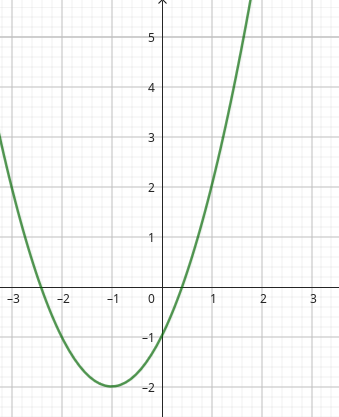
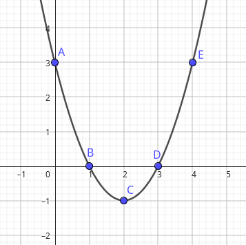

Seção3Gráfico de Funções Quadráticas II: Forma Padrão
Subseção3.1Função Quadrática do tipo \(f(x)=ax^2\)
Uma Função Quadrática na forma padrão é do tipo \(f(x)=ax^2\) quando apresenta apenas o termo cuja parte literal tem a incógnita x elevado ao quadrado e o coeficiente \(a\) diferente de zero.
Note que ao mexer no botão dos valores do coeficiente \(a\text{,}\) a concavidade da parábola é alterada. Ou seja, se \(a\) é negativo, então a concavidade é virada para baixo, se \(a\) é nulo, a concavidade não existe e o gráfico é uma reta constante passando por zero e se \(a\) é positivo, a concavidade fica virada para cima.
Subseção3.2Função Quadrática na Forma \(f(x)=ax^2+bx\)
Uma Função Quadrática na forma padrão é do tipo \(f(x)=ax^2+bx\) quando apresenta um binômio de grau 2, com partes literais iguais a \(x^2\) e \(x\) e e coeficientes reais, sendo \(a\) diferente de zero. Também conhecida como Função Quadrática Incompleta com \(c=0\text{.}\)
Vamos observar o comportamento da função no gráfico interativo.
Observe que precisamenos analisar os coeficientes \(a\) e \(b\) e os seus sinais no plano cartesiano pois não é tão simples quanto o primeiro tipo \(f(x)=ax^2\text{.}\)
Se \(a>0\) e \(b>0\text{,}\) então a concavidade da parábola é virada para cima e seu eixo de simetria está à esquerda do eixo y.
Se \(a>\) e \(b<\text{,}\) então a concavidade da parábola é virada para cima e seu eixo de simetria está à direita do eixo y.
Se \(a<0\) e \(b>0\text{,}\) então a concavidade da parábola é virada para baixo e seu eixo de simetria está à direita do eixo y.
Se \(a<0\) e \(b<0\text{,}\) então a concavidade da parábola é virada para baixo e seu eixo de simetria está à esquerda do eixo y.
Subseção3.3Função Quadrática do Tipo \(f(x)=ax^2+c\)
Uma Função Quadrática na forma padrão é do tipo \(f(x)=ax^2+c\) quando apresenta um binômio de grau 2, com um termo cuja parte literal é \(x^2\) e o outro termo é uma constante \(c\text{,}\) com \(a\) e \(c\) coeficientes reais, sendo \(a\) diferente de zero. É também conhecida como Função Quadrática Incompleta com \(b=0\)
Vamos observar o que acontece com o gráfico desta função quando alteramos seus coeficientes no gráfico interativo.
Podemos observar com o gráfico interativo que \(a\) é o valor que interfere na concavidade da parábola e \(c\) é valor onde a parábola intersecta o eixo y.
Veremos algumas imagigens combinando os sinais dos coeficientes \(a\) e \(c\text{:}\)
\(a>0\) e \(c>0\text{;}\)
\(a>0\) e \(c=0\text{;}\)
\(a>0\) e \(c<0\text{;}\)
\(a<0\) e \(c>0\text{;}\)
\(a<\) e \(c=0\text{;}\)
\(a<0\) e \(c<0\)
Assim, observamos que a variação da função quadrática padrão do tipo \(f(x)=ax^2+c\) trabalha a parábola verticalmente, mantendo o eixo de simetria coincidindo com o eixo y, diferentemente da função do tipo \(f(x)=ax^2+bx\) que desloca o eixo de simetria pelo eixo x e mantendo a parábola com algum ponto de intesecção na origem do sistema.
Subseção3.4Função Quadrática do Tipo \(f(x)=ax^2+bx+c\)
Uma Função Quadrática na forma padrão é do tipo \(f(x)=ax^2+bx+c\) quando apresenta um trinômio de grau 2, com coeficientes reais \(a\text{,}\)\(b\) e \(c\) e partes literais cuja incógnita é a variável \(x\text{.}\) É também conhecida como Função Quadrática Completa.
Analisaremos uma função quadrática completa num gráfico interativo, investigando a variação de seus coeficientes \(a\text{,}\)\(b\) e \(c\) e sua influência na parábola gerada.
Note que agora temos os três coeficientes influenciando no desenho da parábola. Ou seja, \(a\) altera a concavidade da parábola, \(b\) altera o eixo de simetria da parábola em relação ao eixo x e por fim, \(c\) altera a intersecção da parábola com o eixo y.
Subseção3.5Coeficientes da Função Quadrática na Forma Padrão
Os coeficientes da Função Quadrática completa na forma padrão do tipo \(f(x)=ax^2+bx+c\) são os valores reais de \(a\text{,}\)\(b\) e \(c\text{,}\) com \(a\neq0\text{.}\)
Exemplos:
\(f(x)=x^2-5x+6\text{,}\) sendo \(a=1\text{,}\)\(b=-5\) e \(c=6\)
\(y=3x^2-2x\text{,}\) sendo \(a=3\text{,}\)\(b=-2\) e \(c=0\)
\(y=\dfrac{x^2-3x+2}{3}\text{,}\) sendo \(a=\dfrac{1}{3}\text{,}\)\(b=-1\) e \(c=\dfrac{2}{3}\)
\(f(x)=\sqrt2x^2+\sqrt5\text{,}\) sendo \(a=\sqrt2\text{,}\)\(b=0\) e \(c=\sqrt5\)
Vamos analisar os sinais dos coeficientes da função quadrática completa, graficamente:
\(a>0\text{,}\)\(b>0\text{,}\)\(c>0\)
\(a>0\text{,}\)\(b>0\text{,}\)\(c<0\)
\(a>0\text{,}\)\(b<0\text{,}\)\(c>0\)
\(a>0\text{,}\)\(b<0\text{,}\)\(c<0\)
\(a<0\text{,}\)\(b>0\text{,}\)\(c>0\)
\(a<0\text{,}\)\(b>0\text{,}\)\(c<0\)
\(a<0\text{,}\)\(b<0\text{,}\)\(c>0\)
\(a<0\text{,}\)\(b<0\text{,}\)\(c<0\)
Subseção3.6Valor Numérico da Função Quadrática
O valor numérico de uma Função Quadrática Padrão é calculado da substituindo os valores de x na fórmula da função, determinando o valor de \(y=f(x)\text{.}\) Veja um exemplo.
Seja a Função Quadrática \(f(x)=x^2-5x+6\text{,}\) então vamos determinar:
O zero da função quadrática é calculado através da igualdade \(f(x)=0\text{,}\) resolvendo a equação do segundo grau e encontrando valores reais para x, que podem ou não existir. Graficamente, o zero da função quadrática representa o(s) ponto(s) de intersecção da parábola com o eixo x. Isto é, \((x_1,0)\) e \((x_2,0)\text{.}\)
Exemplo 1: Encontre os zeros da função quadrática \(f(x)=x^2-5x+6\text{.}\)
Portanto, os zeros da função quarática são \(x_1=2\) e \(x_2=3\text{.}\)
Note como podemos observar os zeros na parábola.
Subseção3.8Vértice da Função Quadrática
Subseção3.9
Dada duas funções quadráticas cujas fórmulas são \(y_1=x^2-4x+3\) e \(y_ 2=-x^2-4x-3\text{.}\) Investigue qual delas têm valor máximo e valor mínimo.
Dica.
Use \(x\in \{-4,-3,-2,-1,0,1,2,3,4\}\)
Solução.
Para a função \(y_1=x^2-4x+3\text{,}\) vamos investigar se ela possui valor máximo ou valor mínimo para os valores de x iguais a -4, -3, -2, -1, 0, 1, 2, 3 e 4. Assim:
Observe que temos, em x=2 (ponto G), um valor mínimo para y. Todos os outros são menores.
Agora, para a função \(y_2=-x^2-4x-3\text{,}\) vamos investigar se ela possui valor máximo ou valor mínimo para os valores de x iguais a -4, -3, -2, -1, 0, 1, 2, 3 e 4. Assim:
Observe que temos, em x=-2 (ponto C), um valor máximo para y. Todos os outros são menores.
Pesquise e produza uma situação semelhante ao exercício anterior em que você possa determinar o maior ou o menor valor de uma curva determinada pela fórmula da função quadrática no plano cartesiano.
Trace uma linha que passe por todos os pontos no quadro a seguir, apenas usando os botões deslizantes a, b e c.
Solução.
Figura3.3.
Selecione qual gráfico representa a função quadrática \(f(x)=x^2-1\)
Resposta.
Resposta.
Resposta.
Resposta.

Solução.
Alternativa b
Figura3.4.
Explique como encontrar a lei de formação da função quadrática do gráfico a seguir.
Figura3.5.
\(\displaystyle f(x)=x^2-3x+6\)
\(\displaystyle f(x)=x^2+5x+6\)
\(\displaystyle f(x)=x^2-5x+6\)
\(\displaystyle f(x)=x^2-x+6\)
Solução.
Alternativa c
Toda Função Quadrática tem como gráfico uma curva chamada Parábola, com a seguintes características:
Quando a é positivo a concavidade é virada para cima e quando a é negativo, a concavidade é virada para baixo.
A intersecção da parábola com o eixo x são as raízes da função.
A intersecção da parábola com o eixo y é o valor do coeficiente c.
O vértice da parábola é o ponto de máximo, se a concavidade é virada para baixo, e o vértice da parábola é ponto de mínimo, se a concavidade é virada para cima.
Exemplo
Uma função quadrática, cuja lei de formação é \(y=x^2-4x+3\text{,}\) é representada no gráfico a seguir.

Figura3.6.
Note que:
A concavidade é virada para cima pois o coeficiente a é positivo.
Os pontos B e D são raízes da função
O ponto C é vértice (ponto de mínimo) da função
O ponto A é coeficiente linear da função
Veja mais exemplos a seguir.
Exemplo3.7.y=-x²+5x-6.
Figura3.8.
y=-6 é o coeficiente linear da função
x=2 e x=3 são as raízes da função
O ponto C=(2,5;0,25) é o vértice da parábola e ponto de máximo da função
A concavidade da parábola é virada para baixo.
Exemplo3.9.y=x²-5x+6.
Figura3.10.
y=6 é o coeficiente linear da função
x=2 e x=3 são as raízes da função
O ponto C=(2,5;-0,25) é o vértice da parábola e ponto de mínimo da função